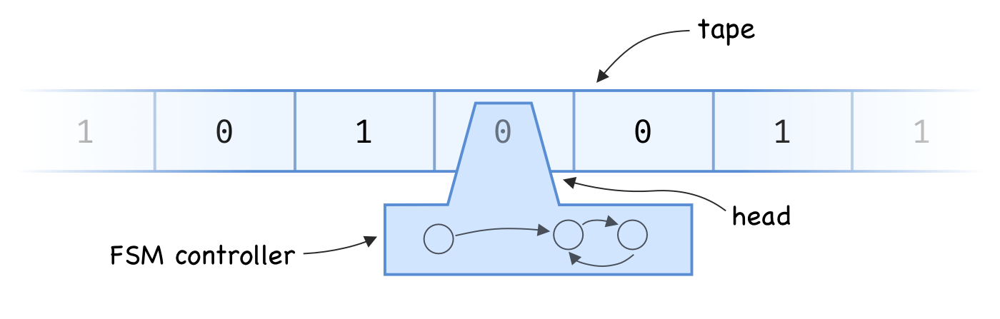

By: Justin Meiners
The halting problem is to devise a method that can determine whether a given Turing machine terminates in a finite amount of time. It is well-known to be undecidable; no such method exists. Naturally, if you ever write a proof that implies how to solve it, there is reason for concern.
In doing research for my master’s thesis, unfortunately, I did just that. It took quite a bit of reading and discussion to detect what went wrong. It turns out I didn’t make any major mistakes, but I learned that the difference between computability and incomputability is quite subtle. I wanted to share this insight into what it means for a function to be incomputable.
My thesis focused on braid group algebra, and reasoning about how a particular property of braids can be computed. Since this is a specialized topic and the details aren’t important, I will explain a similar problem using Turing Machines directly.
A Turing machine consists of:
S (often { 0, 1 } where 0 can be called “blank”).Q.
As a Turing machine runs, the read/write head sends the current symbol to the controller. The controller can then:
Which symbol to write and which transition to make is determined entirely by the controller’s state and the symbol that was read.
For answering questions about computability and complexity, it doesn’t matter how many symbols the alphabet has or how complex the finite state machine is.
How do we go about determining whether a Turing machine will halt? Here is the basic idea: run the machine for a large number of steps. If it runs for longer than we expected, it probably won’t terminate!
Ok, that’s obvious and not very helpful. “probably won’t” isn’t good enough. The actual difficulty is that the machine might run for longer than we expect and still terminate. We might just need to run it a little bit longer. But, what if we could determine exactly what that threshold is? In other words, what if there was a specific number of steps that any terminating machine would not exceed? It might seem like there is no way to determine such a bound, but it is actually pretty straightforward.
We can estimate how long a Turing machine will run based on its complexity. In computer science, we often think longer programs are more complex. Similarly, a Turing machine with a lot of information on the tape has a “long program” to run and work with.
A Turing machine has only finitely many non-blank squares.
For a fixed state machine Q and alphabet S, define A(n, Q, S) to be the set of Turing
machines in Q and S that:
n non-blank squares.
(n can be thought of as an estimate of program length).There are at most |S|^n machines of this kind;
therefore, A(n, Q, S) is a finite set.
If we then let l(T) be the number of steps machine T runs for before termination,
{ l(T) : T in A(n, Q, S) } is finite and thus has a maximum M.
So given any Turing machine with this particular controller and configuration,
we can run it for M steps, and if it goes longer, then we know it will never terminate!
We can even define a function f_{S, Q}(n) that is the approximate M value for our inputs!
In fact, we don’t care about f in particular;
ANY function that is strictly larger than f will do.
So why can’t we do this?
Well, to know when to stop running, we would actually have to be able to compute the bound f in the real world.
In other words, we need an effective procedure or algorithm for computing f.
Since there is no way to solve the halting problem,
the only conclusion is that f grows faster than any function that can be computed in the real world.
Even though we can write programs to compute functions such as polynomials and exponentials, none of those grow fast enough.
Perhaps we could compute a lookup table to store this bound, but that would also require infinite space.
This shows us that uncomputability is primarily a problem of growth rates, not any kind of tricky function definition. Some functions just grow too quickly to be computed by a machine.
Note that the same limitation occurs for less sophisticated models of computation. The Ackermann function is a classic example of a function that requires the full power of a Turing machine to compute. This is due to its fast rate of growth.
Minsky. Computation: Finite and Infinite Machines. Chapter 8.